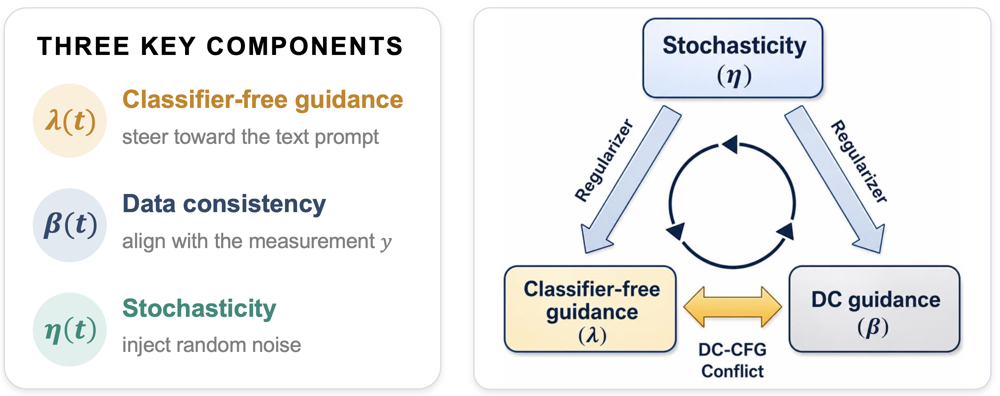
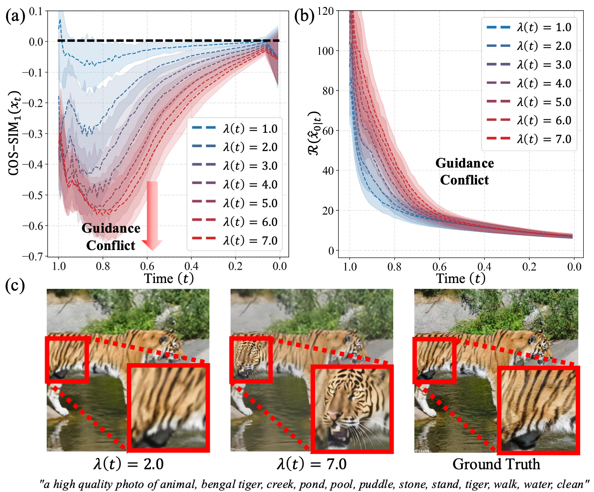
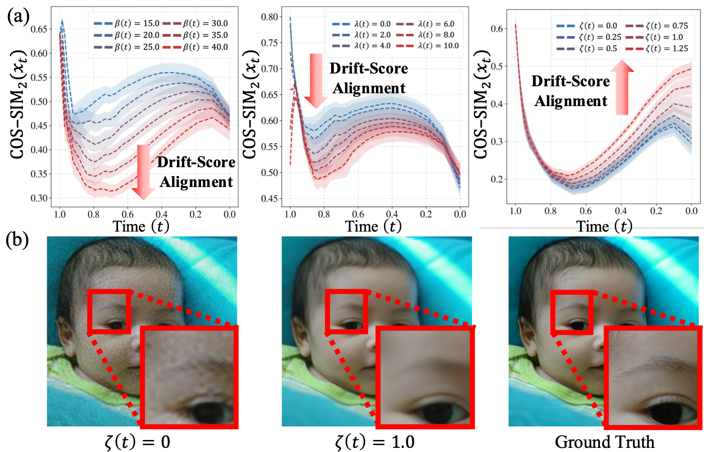
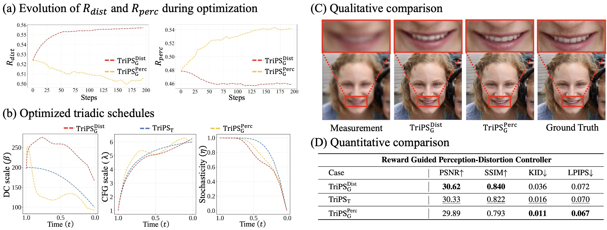

Posterior sampling as an optimization problem of time-varying schedules over three coupled components
Generative posterior sampling for inverse problems usually consists of three main components:
data consistency (DC) guidance, classifier-free guidance (CFG), and stochasticity.
While prior works have focused on how to develop each or all of these components, far less attention has been
paid to how to schedule them, leading to heuristically fixed or only partially adjusted, suboptimal schedules.
We reveal that these three components follow triadic coupling dynamics, and propose
TriPS (Triadic Dynamics Aware Diffusion Posterior Sampling), which optimizes the time-varying schedules of
these three coupled forces.

Qualitative Samples
Linear inverse problems (SD3.5-M)
1–3 / 15
Drag the handle on any pair to reveal each side. Inpainting uses TriPS-T; the others use TriPS-G.
Analysis
Triadic Coupling Dynamics
We analyze the triadic coupling dynamics in posterior sampling, governed by DC guidance, CFG, and stochasticity.
We formalize the early-stage DC-CFG conflict and show how stochasticity regularizes sampling trajectories toward
higher-probability regions.

Early-stage guidance conflict. Since DC guidance and CFG originate from distinct objectives,
their update directions are misaligned. As the CFG scale increases, this early-stage conflict intensifies,
slowing the decay of the measurement residual and inducing semantic hallucinations that deviate from the
measurement.

Stochasticity as a regularizer. Stronger DC guidance or CFG drives sampling away from
higher-probability trajectories, lowering its alignment with the score function, whereas appropriately scaled
stochasticity consistently improves this alignment, suppressing artifacts and restoring perceptual fidelity.
➤ Triadic Scheduling Trend
β(t)↓DC guidance
λ(t)↑Classifier-free guidance
η(t)↓Stochasticity
Method
Triadic Schedule Optimization
To realize the triadic scheduling trend, TriPS comprises two complementary paradigms: a template-based schedule
search that identifies robust schedule curves from a discrete family of functional forms, and a GRPO-based schedule
optimization that captures complex temporal curves beyond the fixed functional templates.
(Left) TriPST explores a discrete search space defined by compact templates (Linear, Exp, Log)
that satisfy the triadic scheduling trend (β(t)↓, λ(t)↑, η(t)↓), turning a high-dimensional
schedule search into a low-dimensional selection. (Right) TriPSG enables continuous schedule
discovery beyond fixed functional forms: a policy πθ samples coefficients from learnable Beta
distributions to parameterize the schedules via Bernstein polynomials, strictly constraining each curve within a
valid range, and is updated by rewards derived from the restored images.
Quantitative Comparison
Linear inverse problems (SD3.5-M)
Table 1 image not found. Add the table image as static/images/Table_1.png
(see the page README), or open it in the
paper PDF.
Quantitative comparison on linear inverse problems with the SD3.5-M flow matching prior
(Table 1 of the paper).
Ablation
Reward-guided Perception–Distortion Control

By reweighting the distortion and perception terms of the hybrid reward, TriPSG navigates the
perception-distortion trade-off. The optimized schedules align with the triadic scheduling trend while exhibiting
fine-grained temporal variations, such as local non-monotonic fluctuations and magnitude shifts, that prove
critical for pushing the perception-distortion Pareto frontier.
Cite
BibTeX
@misc{bang2026triadicdynamicsawarediffusion,
title = {Triadic Dynamics Aware Diffusion Posterior Sampling for Inverse
Problems: Optimizing Guidance and Stochasticity Schedules},
author = {Junseo Bang and Dong Ju Mun and Hoigi Seo and Seongmin Hong and Se Young Chun},
year = {2026},
eprint = {2605.26470},
archivePrefix = {arXiv},
primaryClass = {cs.CV},
url = {https://arxiv.org/abs/2605.26470}
}